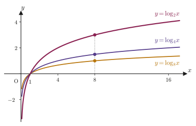
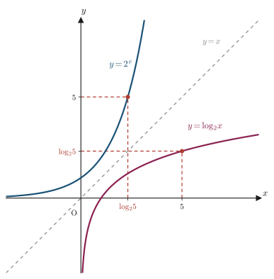

第6章対数の性質
地震の規模を表すマグニチュード，音の大きさを表すデシベル，水溶液の酸性・アルカリ性を表す pH，星の明るさを表す等級——これらは，どれも「桁違いに変化する量」を扱いやすくするために，対数（logarithm）という道具を使っている．例えば pH は水素イオン濃度 $[\mathrm H^+]$（単位 $\mathrm{mol/L}$）を使って $\mathrm{pH}=-\log_{10}[\mathrm H^+]$ と定義され，pH が 1 変わるごとに $[\mathrm H^+]$ は10倍・$1/10$倍になる．対数は，このような「掛け算・割り算を，足し算・引き算に変換する」という強力な性質を持っている．
前章までで，加法定理を出発点として2倍角・半角・3倍角・積和・和積・合成という三角関数の公式群を導いた．本章では舞台を変え，対数について成り立つ5つの性質——底の変換公式を中心に，指数と対数の関係を縦横に使いこなすための公式——を，1つずつ証明とともに確認する．これらの性質は，のちに対数関数のグラフ・対数微分・情報理論の「ビット」（$\log_2$）・化学のpHや平衡定数・材料科学の腐食電位（Nernstの式）など，対数が顔を出すあらゆる場面で当たり前のように使われる「文法」である．公式を覚えるだけでなく，「なぜそれが成り立つのか」を自分の手で追えるようになることが，本章の目標である．
- 対数の定義 $\log_a b=x\iff a^x=b$ の復習と，本章で繰り返し使う指数法則の対数版 $\log_c P^k=k\log_c P$
- 底の変換公式 $\log_a b=\dfrac{\log_c b}{\log_c a}$（公式6.1）とその証明
- 底の変換公式の特別な場合としての $\log_a b=\dfrac1{\log_b a}$（公式6.2）
- 底・真数がどちらも累乗になっている場合の公式 $\log_{a^m}b^n=\dfrac nm\log_a b$（公式6.3）
- 対数と指数が互いに「打ち消し合う」関係を表す $a^{\log_a b}=b$（公式6.4）と，その視覚的な意味（逆関数のグラフ）
- 2通りの底を行き来する公式 $a^{\log_c b}=b^{\log_c a}$（公式6.5）
- 応用：化学・材料科学で対数がどう使われるか（pH，Nernstの式の係数 $0.0592\ \mathrm V$）
もとにしたノート：望月泰英『数学ノート 高校数学』 pp. 21–22．
注：該当ページの証明部分（Evidence）は韓国語で書かれていたため，本章では内容を完全に日本語に訳して収録した．また，対数の定義そのものと指数法則の対数版はノートの範囲外だが，本章の証明の土台として6.1節冒頭で補った．
6.1 対数の定義の復習と底の変換公式
対数の性質を証明する前に，定義と，証明の中で繰り返し使う法則を確認しておこう．
定義6.1 対数（復習）
$a>0,\ a\neq1$ とする．指数関数 $y=a^x$（$x$は実数全体を動く）は，$a>1$ なら単調増加（monotonically increasing），$0\lt a\lt1$ なら単調減少（monotonically decreasing）であり，値域は正の実数全体である．したがって，どんな正の数 $b$ に対しても，$a^x=b$ を満たす実数 $x$ がただ1つ定まる．この $x$ を，$a$ を底（base）とする $b$ の対数（logarithm）といい，
\begin{equation} \log_a b = x \iff a^x = b \label{eq:6-log-def} \end{equation}と定義する．$b$ を対数の真数（antilogarithm）と呼び，$a^x>0$ が常に成り立つことから，真数 $b$ は必ず正でなければならない（$b\le0$ の対数は定義されない）．
数学ノート：本章で繰り返し使う指数法則の対数版
$c>0,\ c\neq1$，$P>0$ とする．数学IIで学んだ対数の法則のうち，本章の証明で特に重要なのは次の1本である．
\begin{equation} \log_c P^k = k\log_c P \qquad (k\text{は実数}) \label{eq:6-log-power-known} \end{equation}（確認：$k$ が正の整数のときは，$\log_c(PQ)=\log_c P+\log_c Q$ を $P^k=P\cdot P\cdots P$（$k$個の積）に $k-1$ 回くり返し使えば $\log_c P^k=\underbrace{\log_c P+\cdots+\log_c P}_{k\text{個}}=k\log_c P$ が得られる．$k$ が0・負の整数・分数・無理数の場合も，指数法則 $a^{p+q}=a^p a^q$ と対数の連続性（continuity）から同じ式が成り立つ．）（大まかに言うと，$k$ を整数から少しずつ小数・無理数に近づけていくと，両辺の値もそれにつれて連続的に近づいていく，という意味である．厳密な取り扱いは大学の微分積分で学ぶ．）また，同じ数を底とする対数は $\log_c c=1$ である（$c^1=c$ だから）．この2つの事実を，本節以降で断りなく使う．
それではさっそく，本章の中心となる性質——底の変換公式——を証明しよう．対数 $\log_a b$ は「底を$a$に固定した」量だが，計算機や対数表では底が10の常用対数（common logarithm）や$e$の自然対数（natural logarithm）のものしか使えないことが多い．次の公式は，底を自由に取り替えるための橋渡しになる．
公式6.1 底の変換公式
$a>0,\ a\neq1,\ b>0$ とし，$c$ を $c>0,\ c\neq1$ を満たす任意の実数とする．このとき，
\begin{equation} \log_a b = \frac{\log_c b}{\log_c a} \label{eq:6-base-change} \end{equation}が成り立つ．
証明
$\log_a b=x$ とおく．定義6.1（式\eqref{eq:6-log-def}）により，これは
$$ a^x = b $$と同じことである．この等式の両辺の，$c$ を底とする対数をとる（$c\neq1,\ c>0$ は，対数 $\log_c(\cdot)$ がきちんと定義されるための条件である）．対数をとっても等式は等式のままなので，
$$ \log_c a^x = \log_c b $$である．左辺に，数学ノート（式\eqref{eq:6-log-power-known}）の指数法則を $P=a,\ k=x$ として使うと，$\log_c a^x=x\log_c a$ と書き直せるから，
$$ x\log_c a = \log_c b $$を得る．ここで，$a>0,\ a\neq1$ より $\log_c a\neq0$ である（もし $\log_c a=0$ なら $a=c^0=1$ となり，$a\neq1$ に矛盾する）．したがって両辺を $\log_c a$ で割ってよく，
$$ x = \frac{\log_c b}{\log_c a} $$となる．$x=\log_a b$ とおいたのだから，これは
$$ \log_a b = \frac{\log_c b}{\log_c a} $$にほかならない．
（証明終わり）
公式6.1で，$c$ に何を選んでもよいということが重要である．例えば $c=10$ とすれば，どんな底の対数も常用対数 $\log_{10}$（電卓や対数表にある対数）で計算できるようになる．次の図6.1は，同じ真数 $x$ に対して底の異なる対数 $\log_2 x,\ \log_4 x,\ \log_8 x$ のグラフを重ねて描いたものである．

応用：Nernstの式に現れる「0.0592」の正体
電池や腐食を扱う電気化学では，電極電位 $E$ が反応物の濃度（正確には活量）にどう依存するかを表すNernstの式（Nernst equation）
$$ E = E^\circ - \frac{RT}{nF}\ln Q $$を使う（$R$は気体定数，$T$は絶対温度，$n$は反応電子数，$F$はFaraday定数，$Q$は反応商，$\ln$は自然対数 $\log_e$）．教科書や実験ノートでは，これがしばしば $25\ {}^\circ\mathrm C$（$T=298.15\ \mathrm K$）で
$$ E = E^\circ - \frac{0.0592}{n}\log_{10}Q $$という「常用対数版」で書かれている．この $0.0592$ がどこから来るかは，公式6.1（底の変換公式）そのものである．$\ln x=\log_e x$ を，$a=e,\ b=x,\ c=10$ として公式6.1に当てはめると
$$ \ln x = \log_e x = \frac{\log_{10}x}{\log_{10}e} $$となる．さらに公式6.2（次に証明する）により $\log_{10}e=\dfrac1{\log_e10}=\dfrac1{\ln10}$ だから，$\dfrac1{\log_{10}e}=\ln10$ であり，
$$ \ln x = (\ln10)\log_{10}x $$と書き直せる．したがって $\dfrac{RT}{nF}\ln Q=\dfrac{RT\ln10}{nF}\log_{10}Q$ であり，$T=298.15\ \mathrm K$ を代入すると
$$ \frac{RT\ln10}{F} = \frac{8.314\times298.15\times2.3026}{96485} \approx 0.05916\ \mathrm V \approx 0.0592\ \mathrm V $$が得られる．対数の底を変換するだけの計算が，材料の腐食電位や電池の起電力を求める実験式の係数として現れるのである．
例題6.1 底の変換公式で常用対数に直す
$\log_2 3$ の値を，常用対数 $\log_{10}2=0.3010,\ \log_{10}3=0.4771$（小数第5位を四捨五入した近似値）を用いて求めよ．
解答 公式6.1で $a=2,\ b=3,\ c=10$ とおくと，
$$ \log_2 3 = \frac{\log_{10}3}{\log_{10}2} = \frac{0.4771}{0.3010} = 1.585\cdots $$よって $\log_2 3\approx1.585$ である（実際，$2^{1.585}\approx3.00$ となることが確かめられる）．
公式6.1で，補助の底 $c$ として真数と同じ数を選ぶ（$c=b$ とする）と，もう1つの重要な公式が特別な場合として出てくる．
公式6.2 $\log_a b = \dfrac1{\log_b a}$
$a>0,\ a\neq1,\ b>0,\ b\neq1$ とする．このとき，
\begin{equation} \log_a b = \frac{1}{\log_b a} \label{eq:6-log-reciprocal} \end{equation}が成り立つ．
証明
$\log_a b=x$ とおくと，定義6.1により $a^x=b$ である．この両辺の，$b$ を底とする対数をとる（$b\neq1,\ b>0$ が必要になるのはここである）と，
$$ \log_b a^x = \log_b b $$右辺は，同じ数を底とする対数だから $\log_b b=1$ である．左辺は，指数法則（式\eqref{eq:6-log-power-known}）により $x\log_b a$ と書き直せるから，
$$ x\log_b a = 1 $$を得る．$a\neq1$ より $\log_b a\neq0$ なので，両辺を $\log_b a$ で割って
$$ x = \frac{1}{\log_b a} $$$x=\log_a b$ であったから，$\log_a b=\dfrac1{\log_b a}$ が示された．
（証明終わり）
数学ノート：公式6.2は公式6.1の特別な場合
公式6.1で $c=b$ とおくと，$\log_a b=\dfrac{\log_b b}{\log_b a}=\dfrac{1}{\log_b a}$（$\log_b b=1$ を使った）となり，ちょうど公式6.2に一致する．ノートでは2つの公式が独立に（別々の Evidence として）証明されているが，実は公式6.2は公式6.1の中に「$c=b$」として最初から含まれている．どちらの証明も自分の手で追えるようになっておくと，「なぜ独立に見える2つの式が実は同じ内容なのか」を見抜く目が養われる．
例題6.2 公式6.2で逆数の関係を確かめる
$\log_2 8$ の値を定義から求め，公式6.2を使って $\log_8 2$ の値を求めよ．
解答 $2^3=8$ だから，定義6.1より $\log_28=3$ である．公式6.2により
$$ \log_82 = \frac{1}{\log_28} = \frac13 $$実際 $8^{1/3}=2$（$8=2^3$ の逆数乗根，すなわち立方根が2）なので，これは正しい．
6.2 指数を持つ数の対数
底や真数がそのまま累乗の形をしている対数，たとえば $\log_4 8$ や $\log_9 27$ を考えよう．$4=2^2,\ 8=2^3$ あるいは $9=3^2,\ 27=3^3$ のように，底も真数も同じ数のべきで書けているとき，対数の値は底・真数の指数だけから決まる簡単な比になる．この関係を公式6.1と指数法則から導く．
公式6.3 $\log_{a^m}b^n=\dfrac nm\log_a b$
$a>0,\ a\neq1,\ b>0$ とし，$m,n$ を実数（ただし $m\neq0$）とする．このとき，
\begin{equation} \log_{a^m}b^n = \frac nm\log_a b \label{eq:6-log-power} \end{equation}が成り立つ．
注意：$m\neq0$ が必要な理由
$m=0$ だと底が $a^0=1$ になってしまい，そもそも対数 $\log_1(\cdot)$ が定義できない（定義6.1の条件「底 $\neq1$」に反する）．また，$m,n$ は整数に限らず，実数であればよい（$a>0$ だから $a^m$ は $m$ が実数でも意味を持つ）．
証明
公式6.1（底の変換公式）を，底を $a^m$，真数を $b^n$ として使う．すなわち，$c>0,\ c\neq1$ を満たす補助の底 $c$ を1つとると，
$$ \log_{a^m}b^n = \frac{\log_c b^n}{\log_c a^m} $$である．分子・分母それぞれに指数法則（式\eqref{eq:6-log-power-known}）を使う——分子は $P=b,\ k=n$ として $\log_c b^n=n\log_c b$，分母は $P=a,\ k=m$ として $\log_c a^m=m\log_c a$——と，
$$ = \frac{n\log_c b}{m\log_c a} $$となる．$m\neq0$ なので，分子・分母をそれぞれ $n,\ m$ と $\log_c b,\ \log_c a$ の積とみて，$\dfrac nm$ をくくり出すと
$$ = \frac nm\cdot\frac{\log_c b}{\log_c a} $$と書き直せる．最後に，$\dfrac{\log_c b}{\log_c a}$ は公式6.1（式\eqref{eq:6-base-change}）より，まさに $\log_a b$ に等しい．したがって
$$ \log_{a^m}b^n = \frac nm\log_a b $$が示された．
（証明終わり）
例題6.3 同じ底のべきどうしの対数
$\log_927$ の値を，(a) 定義から直接，(b) 公式6.3から，それぞれ求めて一致することを確かめよ．
解答 (a) $9^x=27$ を満たす $x$ を求める．$9=3^2,\ 27=3^3$ だから，$9^x=3^{2x}=27=3^3$ より $2x=3$，$x=\dfrac32$．よって $\log_927=\dfrac32$．
(b) $9=3^2,\ 27=3^3$ なので，公式6.3で $a=3,\ m=2,\ b=3,\ n=3$ とおくと，
（$\log_33=1$ を使った）．(a)と(b)は一致する．検算として $9^{3/2}=(3^2)^{3/2}=3^3=27$ を確かめてもよい．
例題6.4 底と真数が別の数のべきになっている場合
$\log_425$ を，$\log_25$ を用いて表せ．
解答 $4=2^2,\ 25=5^2$ だから，公式6.3で $a=2,\ m=2,\ b=5,\ n=2$ とおくと，
$$ \log_425 = \log_{2^2}5^2 = \frac22\log_25 = \log_25 $$となる．底と真数が「同じ数」のべきである必要はなく，$a=2$（底の素）と$b=5$（真数の素）が異なっていても，指数 $m,n$ さえそろっていれば（この場合はどちらも2乗）$\log_{a^m}b^n=\log_ab$ と，指数がきれいに消えることが分かる．
6.3 対数と指数の相互変換
定義6.1で見たように，$\log_a b=x$ と $a^x=b$ は同じ関係を2通りの書き方で表したものである．この事実を，あえて「$a$の$\log_ab$乗を計算する」という形で書き直すと，どうなるだろうか．
公式6.4 $a^{\log_ab}=b$
$a>0,\ a\neq1,\ b>0$ とする．このとき，
\begin{equation} a^{\log_ab} = b \label{eq:6-log-exp-def} \end{equation}が成り立つ．
証明
$a^{\log_ab}=x$ とおく．この両辺の，$a$ を底とする対数をとると，
$$ \log_aa^{\log_ab} = \log_ax $$左辺に，指数法則（式\eqref{eq:6-log-power-known}）を $P=a,\ k=\log_ab$ として使うと，$\log_aa^{\log_ab}=(\log_ab)\cdot\log_aa$ となり，さらに $\log_aa=1$（同じ数を底とする対数は1）だから，これは $\log_ab$ そのものである．よって
$$ \log_ab = \log_ax $$となる．左辺と右辺は，同じ数（$a$）を底とする，値の等しい対数である．ここで $t=\log_ab\,(=\log_ax)$ とおくと，対数の定義（定義6.1，式\eqref{eq:6-log-def}：$\log_ac=s\iff a^s=c$）を $c=b$ の場合に使えば $a^t=b$ が，$c=x$ の場合に使えば $a^t=x$ が，それぞれ成り立つ．$a^t$ は（$t$ を固定すれば）ただ1つに定まる実数だから，$b=a^t=x$，すなわち $b=x$ である．$x$ はもともと $a^{\log_ab}$ と定義した文字だったから，
$$ b = x = a^{\log_ab} $$すなわち $a^{\log_ab}=b$ が示された．
（証明終わり）
イメージ：「$\log_a$を取る」と「$a$の何乗かにする」は逆の操作
公式6.4は，「$b$に$\log_a$を作用させてから，その結果を$a$のべき乗の指数にする」と，$b$自身に戻ることを言っている．これはちょうど，靴を履いてから脱ぐと元の（靴を履いていない）状態に戻るのと同じ「逆操作」の関係であり，数学の言葉では逆関数（inverse function）の性質そのものである．関数 $y=a^x$ のグラフと関数 $y=\log_ax$ のグラフは，直線 $y=x$ に関して線対称になる（下の図6.2）．図の中の点をたどってみよう：$x=5$ から出発して $\log_2x$ のグラフで $y=\log_25\approx2.32$ に上がり，その値 $2.32$ を今度は $x$ 座標として $2^x$ のグラフに入れると，$y=2^{\log_25}=5$ となって元の $5$ に戻ってくる——これがまさに公式6.4の中身である．

例題6.5 公式6.4の直接適用
$3^{\log_35}$ の値を求めよ．
解答 公式6.4で $a=3,\ b=5$ とおくと，そのまま
$$ 3^{\log_35} = 5 $$である．念のため意味を確認すると，$\log_35$ は「$3$を何乗したら$5$になるか」という数だから，その数だけ$3$を実際に累乗すれば，定義から$5$に戻るのは当然である．
最後に，底の異なる2つの対数と指数を結びつける公式を証明する．公式6.4は「同じ底」どうしの打ち消し合いだったが，次の公式6.5は，指数と真数の役割を入れ替えても値が変わらないという，一見不思議な対称性を主張する．
公式6.5 $a^{\log_cb}=b^{\log_ca}$
$a>0,\ b>0$ とし，$c$ は $c>0,\ c\neq1$ を満たすとする．このとき，
\begin{equation} a^{\log_cb} = b^{\log_ca} \label{eq:6-log-exp-swap} \end{equation}が成り立つ．
証明
$a^{\log_cb}=x$ とおく．両辺の，$c$ を底とする対数をとると，
$$ \log_ca^{\log_cb} = \log_cx $$左辺に指数法則（式\eqref{eq:6-log-power-known}）を $P=a,\ k=\log_cb$ として使うと，
$$ (\log_cb)(\log_ca) = \log_cx $$となる．ここで，左辺の積 $(\log_cb)(\log_ca)$ を見方を変えて，今度は逆向きに指数法則を使う．$k\log_cP$ の形（$P=b,\ k=\log_ca$）とみなせば，$(\log_ca)(\log_cb)=\log_cb^{\log_ca}$ と書き直せる（積の順序を入れ替えただけなので，これはもとの左辺と等しい）．したがって
$$ \log_cb^{\log_ca} = \log_cx $$底が同じ$c$の対数どうしが等しい．ここで $t=\log_cb^{\log_ca}\,(=\log_cx)$ とおくと，対数の定義（定義6.1，式\eqref{eq:6-log-def}）を使えば，$c^t=b^{\log_ca}$ と $c^t=x$ が同時に成り立つ．$c^t$ は（$t$ を固定すれば）ただ1つに定まる実数だから，
$$ b^{\log_ca} = x $$$x=a^{\log_cb}$ であったから，
$$ b^{\log_ca} = x = a^{\log_cb} $$すなわち $a^{\log_cb}=b^{\log_ca}$ が示された．
（証明終わり）
例題6.6 公式6.5を具体的な数値で確かめる
$a=2,\ b=8,\ c=4$ の場合に，公式6.5 $a^{\log_cb}=b^{\log_ca}$ が成り立つことを数値で確かめよ．
解答 まず必要な対数の値を求める．$4=2^2,\ 8=2^3$ だから，公式6.3より $\log_48=\log_{2^2}2^3=\dfrac32\log_22=\dfrac32$．同様に $\log_42=\log_{2^2}2^1=\dfrac12\log_22=\dfrac12$．よって
$$ a^{\log_cb} = 2^{\log_48} = 2^{3/2} = 2\sqrt2 \approx 2.828, \qquad b^{\log_ca} = 8^{\log_42} = 8^{1/2} = \sqrt8 = 2\sqrt2 \approx 2.828 $$両辺はどちらも $2\sqrt2$ で一致し，公式6.5が成り立つことが確かめられた．
6.4 まとめと演習
6.4.1 まとめ
- 対数の定義：$a>0,\ a\neq1,\ b>0$ のとき，$\log_ab=x\iff a^x=b$．真数$b$は必ず正．
- 本章の証明はすべて，指数法則の対数版 $\log_cP^k=k\log_cP$（$c>0,c\neq1,P>0$）と $\log_cc=1$ の2つに基づいている．
- 底の変換公式（公式6.1）：$\log_ab=\dfrac{\log_cb}{\log_ca}$．どんな底の対数も，任意の別の底$c$の対数の比として書き直せる．
- 公式6.1で$c=b$とした特別な場合が，公式6.2：$\log_ab=\dfrac1{\log_ba}$（対数の底と真数を入れ替えると逆数になる）．
- 公式6.3：$\log_{a^m}b^n=\dfrac nm\log_ab$（$m\neq0$）．底・真数がべきの形のとき，対数の値は指数の比だけから決まる．
- 公式6.4：$a^{\log_ab}=b$．「$\log_a$を取る」と「$a$のべき乗にする」は互いに逆の操作（$y=a^x$と$y=\log_ax$は逆関数で，グラフは$y=x$に関して線対称）．
- 公式6.5：$a^{\log_cb}=b^{\log_ca}$．指数と真数の役割を入れ替えても値は変わらない．
- 応用：pHの定義 $\mathrm{pH}=-\log_{10}[\mathrm H^+]$，Nernstの式の係数 $\dfrac{RT\ln10}{F}\approx0.0592\ \mathrm V$（$25\ {}^\circ\mathrm C$）はいずれも対数の底の変換の実例である．
6.4.2 演習問題
演習6.1 底の変換公式で常用対数に直す
$\log_35$ の値を，常用対数 $\log_{10}3=0.4771,\ \log_{10}5=0.6990$（小数第5位を四捨五入した近似値）を用いて求めよ．
ヒント：公式6.1で $a=3,\ b=5,\ c=10$ とおく．例題6.1と同じ手順である．
演習6.2 公式6.2で逆数の関係を確かめる
$\log_39$ の値を定義から求め，公式6.2を使って $\log_93$ の値を求めよ．
ヒント：$3^{?}=9$ をまず考える．例題6.2と同じ手順である．
演習6.3 同じ底のべきどうしの対数
$\log_816$ の値を，(a) 定義から直接，(b) 公式6.3から，それぞれ求めて一致することを確かめよ．
ヒント：$8=2^3,\ 16=2^4$ である．例題6.3と同じ手順である．
演習6.4 公式6.4の直接適用
$2^{\log_27}$ の値を，公式6.4を用いて求めよ．また，$\log_27$ が「$2$を何乗すると$7$になるか」という数であることを踏まえて，答えが妥当である理由を1行で説明せよ．
ヒント：例題6.5と同じ考え方である．
演習6.5 公式6.5を具体的な数値で確かめる
$a=3,\ b=27,\ c=9$ の場合に，公式6.5 $a^{\log_cb}=b^{\log_ca}$ が成り立つことを数値で確かめよ．
ヒント：$9=3^2,\ 27=3^3$ に公式6.3を使って $\log_927$ と $\log_93$ をまず求める（演習6.2の $\log_93$ の結果が使える）．例題6.6と同じ手順である．
演習6.6 公式を組み合わせて恒等式を示す（証明問題）
$a>0,\ a\neq1,\ b>0,\ b\neq1$ のとき，$\log_ab\cdot\log_ba=1$ であることを，公式6.2を用いて示せ．
ヒント：公式6.2 $\log_ab=\dfrac1{\log_ba}$ の両辺に $\log_ba$ を掛けるだけである．
6.4.3 参考文献
- 望月泰英『数学ノート 高校数学』（手書き講義ノート）．本章の底本．
- E. Maor, e: The Story of a Number, Princeton University Press, 1994．対数と自然対数の底 $e$ の歴史的背景を扱った定評ある一般向け数学書．